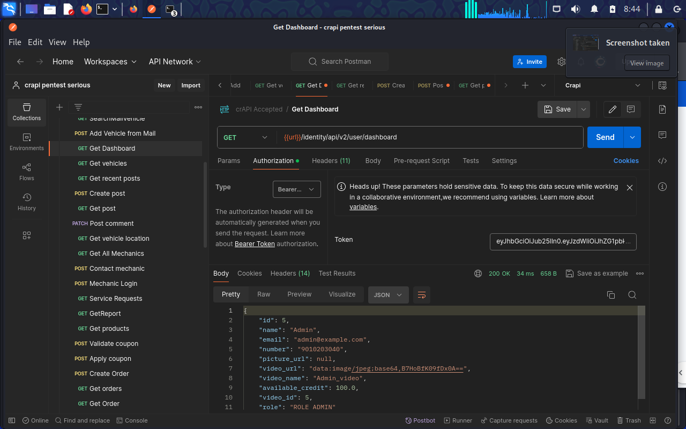
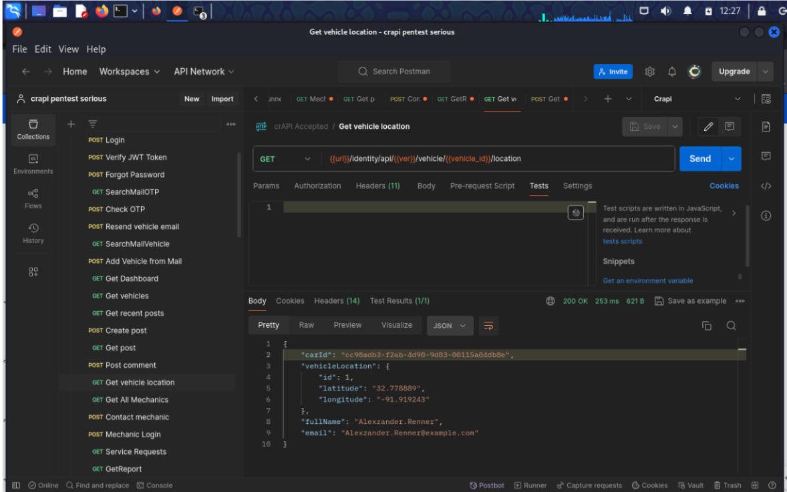
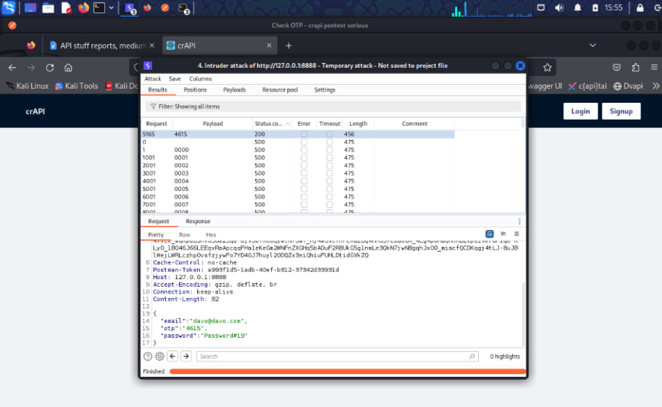

A full, end-to-end penetration test of OWASP's crAPI (Completely Ridiculous API) — a deliberately vulnerable app built to mirror real-world microservice architecture — tested against the OWASP API Security Top 10.
crAPI is OWASP's own intentionally vulnerable API application, built to reflect real API design patterns and mistakes across a realistic microservice architecture — identity, workshop/shop, community, and mechanic services — rather than one flat endpoint. I used it as a structured way to test the full OWASP API Security Top 10 (2023) against something closer to what an actual client assessment looks like.
Chained together, the 12 findings let a low-privilege, authenticated attacker forge an administrator session, take over any user account, harvest every registered user's PII and live location, fabricate unlimited store credit, and extract discount codes that were never issued — all without a zero-day or an advanced exploitation technique. That's the part I find most worth saying out loud: nothing here needed novel research, just patient, methodical testing against every object, function, and trust boundary in the app.
| Target | crAPI, deployed locally via Docker | |
| Services in scope | Identity, Workshop/Shop, Community, Mechanic microservices | |
| Access level | Authenticated low-privilege user + unauthenticated checks | |
alg:none attacks.| Finding | OWASP Category | Severity |
|---|---|---|
| JWT Algorithm Confusion (RS256 → HS256) — Admin Bypass | API2: Broken Authentication | Critical |
| Deprecated API Version Enables OTP Brute-Force / Takeover | API9: Improper Inventory Mgmt | Critical |
| BOLA — Vehicle Live Location Disclosure | API1: Broken Object-Level Auth | Critical |
| Mass Assignment — Fraudulent Refund/Cashback | API3: Broken Object Property Auth | Critical |
| BOLA — Mechanic Report Disclosure (incl. Admin) | API1: Broken Object-Level Auth | Critical |
| Mass Assignment — Negative Pricing / Fund Fabrication | API3: Broken Object Property Auth | Critical |
| BFLA — Unauthorized Admin Video Deletion | API5: Broken Function-Level Auth | Critical |
| NoSQL Injection — Coupon Validation | API8: Security Misconfiguration | Critical |
| SSRF — Community Post Link Handling | API7: Server-Side Request Forgery | Critical |
| Excessive Data Exposure — Community Posts Feed | API3: Broken Object Property Auth | High |
| Mass Assignment — Internal Video Property Tampering | API3: Broken Object Property Auth | High |
| Unrestricted Resource Consumption — Contact-Mechanic Flow | API4: Unrestricted Resource Consumption | Medium |
JWT algorithm confusion → full admin bypass. crAPI issues RS256-signed JWTs but doesn't pin the expected algorithm on verification. By pulling the public key from the JWKS endpoint and re-signing a token as HS256 — using that public key itself as the HMAC secret — I forged a token asserting the admin role and reached the full administrator dashboard with zero valid credentials.

GET /identity/api/v2/user/dashboard returns the admin account, "role": "ROLE ADMIN", with zero valid admin credentials.BOLA — vehicle location disclosure. The vehicle-location endpoint returned another user's live GPS coordinates whenever it was given a vehicle_id that didn't belong to the requester — no ownership check at all. Chained with a separate excessive-data-exposure bug that leaked every user's vehicle ID, this meant real-time location tracking of any user on the platform.

OTP brute-force via a deprecated API version. crAPI runs a hardened v3 OTP-verification endpoint right alongside an unprotected, deprecated v2 with no attempt limiting. Burp Intruder against the 10,000-value OTP space on v2 recovered a valid code in seconds — full account takeover.

v2 endpoint — no rate limiting to stop it.Every finding traces back to one of four root causes — the full report includes a phased 0–7 day / 1–4 week / 1–3 month remediation roadmap:
Full technical detail — request/response evidence, CVSS scoring, and remediation code for every finding — is in the complete report, downloadable below.